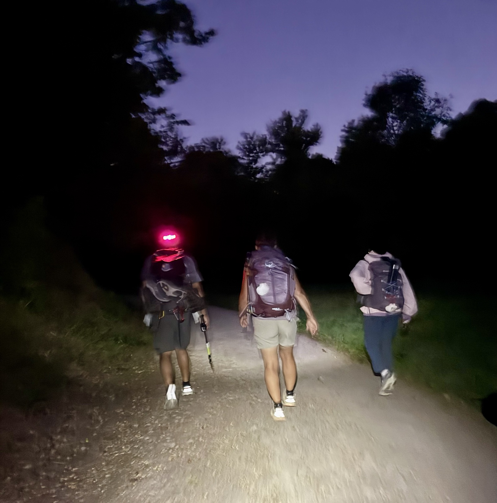
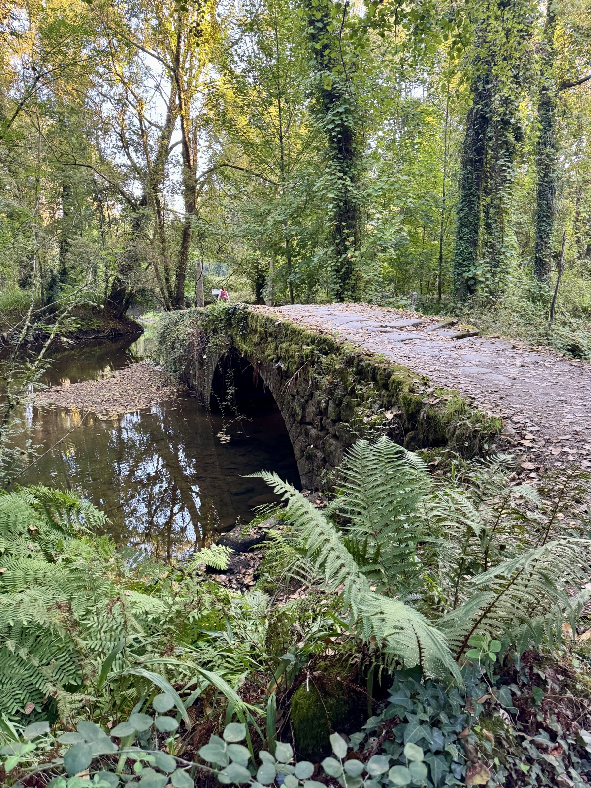
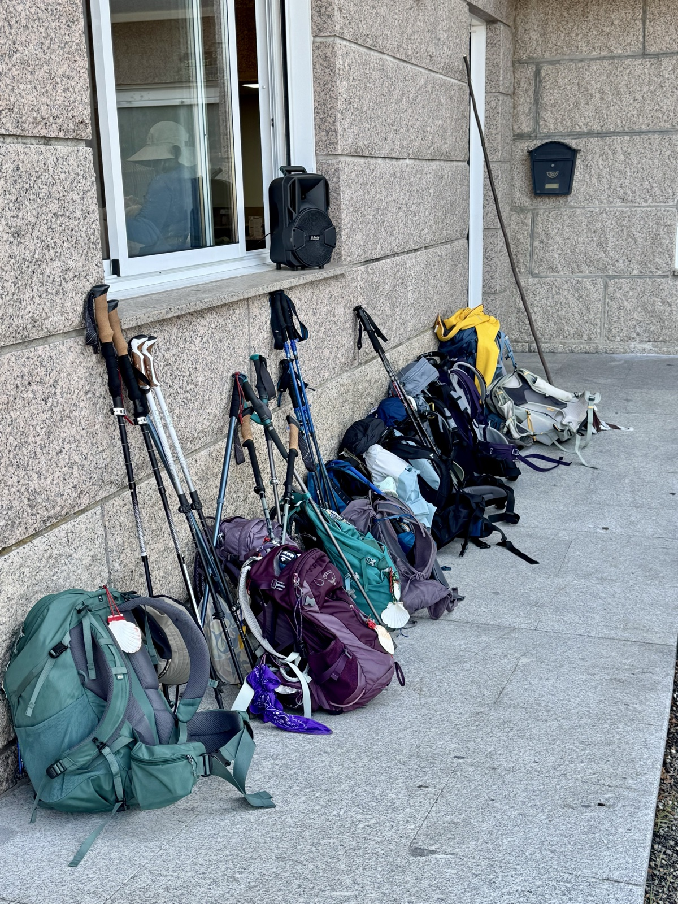

Stage 7: Tui, Spain to Porrino, Spain
Data: 11.29 miles, 4:13 hours moving time, elevation 1,237 feet.
Hotel: Alojamientos Central
Our 7 am start in the dark walking into the sunrise made for a cool and vigorous start to an easy day. With the stars twinkling in the night sky over the ancient city, it was a breathtaking scene of pilgrims with headlamps lining the streets.

Medieval bridges with embedded wagon ruts made us pause to imagine the pilgrims and local villagers who have shared our journey. Imprinted stones of over a thousand years still hold strong for the 44,368 pilgrims who’ve passed here since 2021. Our group of 6 is included in this figure. Empty stone buildings stand strong despite weeds and wild flowers creeping into their rooms. Birds call and heckle each other and the stream trickles and curls around creek beds. An occasional rooster announces the morning sun rising slowly and fiercely over the mountaintops.

At a cool—58*F in the forest this morning and my hands were nearly numb. But I didn’t worry as the forecast was for 91* by 1 pm. We stopped at a pilgrim cafe for coffee and treats. The pilgrim cafes are often filled with music, a little dancing, and grateful, hungry pilgrims eager for whatever is on the menu. Rows of backpacks in every hue are stacked against the wall and a rainbow of hiking poles make the place look like a ski lodge. After a brief recharge, we set off for the last 2.5 miles to Porrino.

Our hotel is clean, comfy, directly on the Way, and includes a healthy and delicious restaurant, which is an added bonus. Pilgrims have big appetites!
My body is tired at the end of our hike today, but we will hydrate, eat well, and sleep hard tonight. Tomorrow is an unusually long and hard day—15 miles and lots of elevation with temperatures well into the nineties. We are setting alarms for 5 AM with a start time of 6AM. Buen Camino!